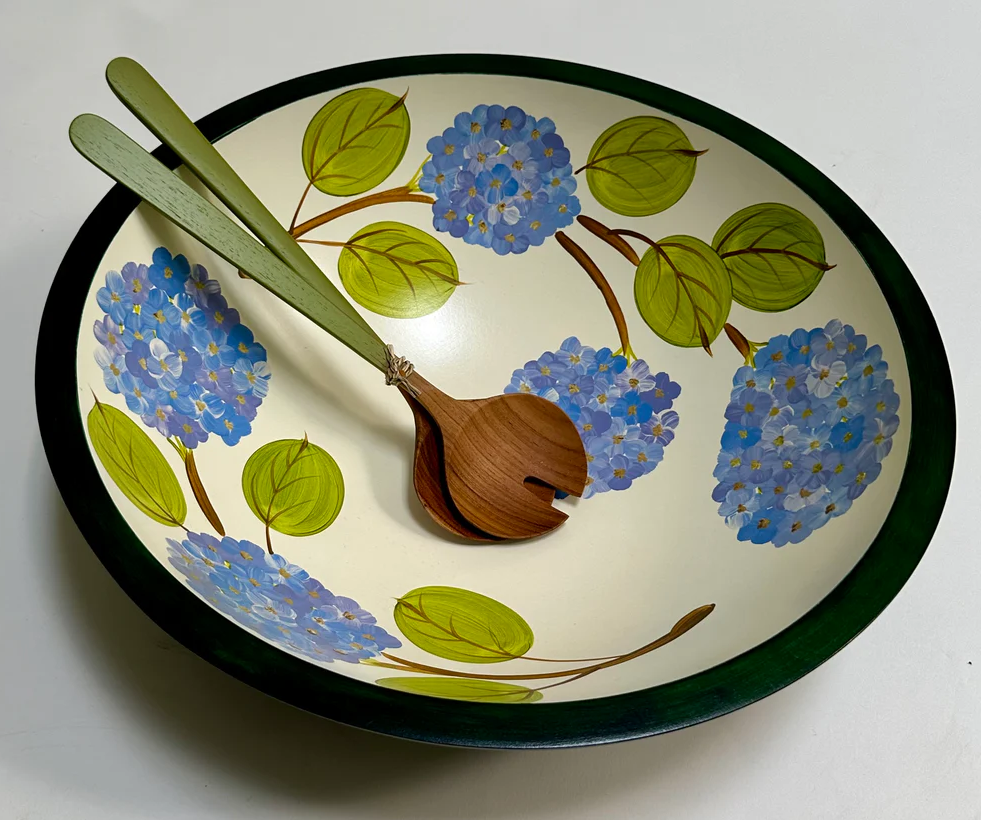

About Me ✸
Grounded in storytelling and craft, my work blends contemporary design with historical influence, particularly from my research of Art Nouveau and Art Deco.
With experience in client-focused editorial illustration, marketing design, and bookmaking, I enjoy developing thoughtful solutions that balance concept, clarity, and visual elegance.
Experience
Graphic Designer
Katonah Wine & Liquor ✸ May 2025 - Present
Design web graphics, product banners, and event promotions to support the brand’s digital presence. Created a monthly newsletter in both print and digital formats, using clear layouts and custom imagery to increase engagement.

Editorial Illustrator
Arc Magazine ✸ Sep. 2024 - Present
Collaborate with editors through concept development and revision to create illustrations that support each article’s narrative. Develop visuals for complex political and cultural topics with a focus on clarity and engagement.

Head of Marketing
WashU Poker Club ✸ Sep. 2025 - Present
Build and maintain the club’s visual identity through logo design, typography, and event branding. Create promotional materials and social campaigns that increased tournament attendance and boosted Instagram engagement. Designed a sponsorship deck that secured over $10,000 in funding and positioned the club with a polished, professional presence.

Painter & Artist's Assistant
Sherwood Forest Design ✸ Nov. 2022 - Present
Hand-paint intricate designs for heirloom wooden bowls and assist in the production of a globally distributed product line. Refine pieces through woodworking and repair techniques to maintain quality and consistency. Mentor new painters and support a collaborative, organized studio environment.
